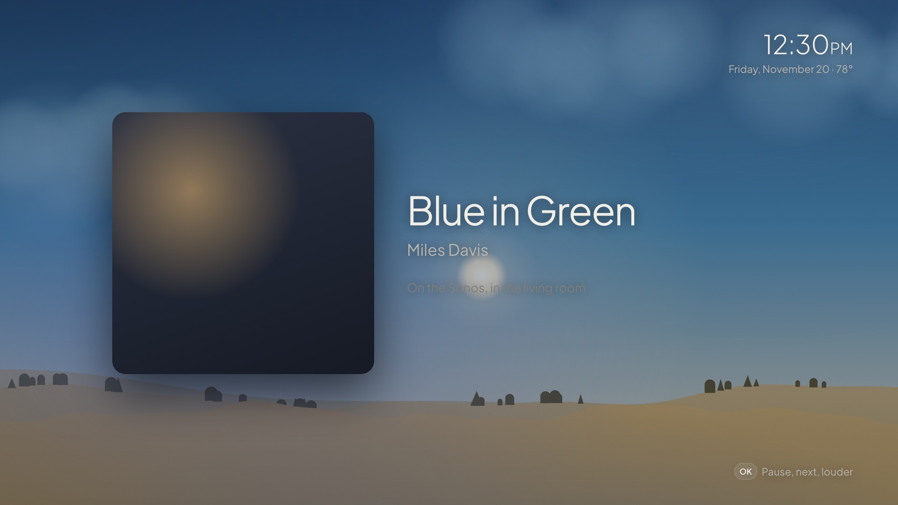
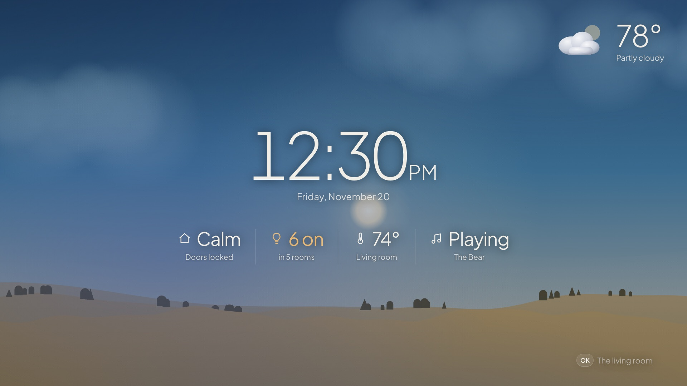

Music: the speakers line 1.03, the artist 2.08, the hint 2.34, the date 2.65. Every line but the title and the clock fails.
Clock: “6 on” 2.55, the date 2.39, the captions 3.0 to 3.8. The wall in the dark look fails the same way at noon; in the light look it passes.